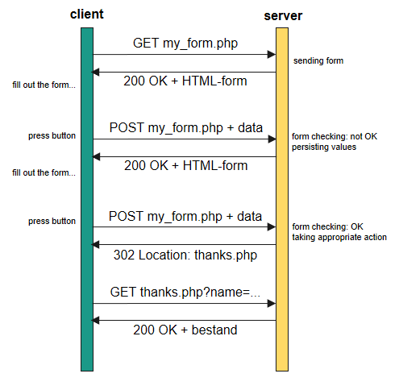

<form> attributes
method — HTTP method to use; get or post (default: get)
action — Where to send the form-data to when submitted
enctype — How the form-data should be encoded when using post
<input> and <textarea> elements a name
name in same setname with square brackets in same set<select> elements a name
value for each <option> of the <select>id attributes not mandatory for proper functioning
name attributesid must be uniquekey=value&key=value&key=value
keys are the name attributes of the elements, the values the entered/selected value
action attribute and pass that querystring to it
GET all values of the querystring are attached to the form its target URL
& and = that could break the format of the querystringPOST the querystring is sent in the request body
| Character | URL Encoded |
|---|---|
| $ | %24 |
| & | %26 |
| < | %3C |
| > | %3E |
| ? | %3F |
| ; | %3B |
| # | %23 |
| / | %3A |
| = | %3D |
| , | %2C |
| " | %22 |
| ' | %27 |
| + | %2B |
| % | %25 |
$_GET — All values sent via GET$_POST — All values sent via POST$_REQUEST — All values sent via GET and POST
Let's take a look at assets/06/examples/form_01.php and assets/06/examples/form_process.php →
target URL
<form action="form_process.php?foo=getfoo&bar=getbar" method="post">
<fieldset>
<h2>Get and Post</h2>
<dl class="clearfix">
<dt><label for="foo">Foo?</label></dt>
<dd class="text">
<input type="text" id="foo" name="foo" value="" />
</dd>
<dt><label for="baz">Baz?</label></dt>
<dd class="text">
<input type="text" id="baz" name="baz" value="" />
</dd>
<dt class="full clearfix" id="lastrow">
<input type="submit" name="btnSubmit" value="Send" />
</dt>
</dl>
</fieldset>
</form>GET for read actions
POST for manipulative* and sensitive actions
POST when sending files
POST for lengthy data (Max length URLs: 2048 chars)
index.php?module=blog&action=delete&id=1login.php?username=bramus&password=Azerty123GET?
GET can be bookmarkedGET can be distributed/embedded (iframe)GET can be cached by webspidersGET remains visible in the browser historyGET link can be prefetched by the browserPOST instead!
action attribute defines where to send a form to
action attribute's value
<form action="<?php echo $_SERVER['PHP_SELF']; ?>" method="get">
...
</form>$_GET or $_POST
<input type="text|password"> and <textarea>
<?php
// Get variable values from $_GET
// Caution: before form submission, $_GET is completely empty!
$name = isset($_GET['name']) ? (string) $_GET['name'] : '';
$pass = isset($_GET['pass']) ? (string) $_GET['pass'] : '';
$remark = isset($_GET['remark']) ? (string) $_GET['remark'] : '';
?><DOCTYPE html>
...
<form action="<?php echo $_SERVER['PHP_SELF']; ?>" method="get">
<input type="text" id="name" name="name" value="<?php echo $name; ?>" />
<input type="password" id="pass" name="pass" value="<?php echo $pass; ?>" />
<textarea name="remark" id="remark" rows="5"
cols="40"><?php echo $remark; ?></textarea>
</form><select>
<option>, check if the value matches the sent-in valueselected="selected" attribute<?php
// Get variable values from $_GET
// Caution: before form submission, $_GET is completely empty!
$cont = isset($_GET['cont']) ? (int) $_GET['cont'] : 0;
?><DOCTYPE html>
...
<form action="<?php echo $_SERVER['PHP_SELF']; ?>" method="get">
<select name="cont" id="cont">
<option value="0"<?php if ($cont == 0) { echo ' selected="selected"'; } ?>>Please select...</option>
<option value="1"<?php if ($cont == 1) { echo ' selected="selected"'; } ?>>Africa</option>
<option value="2"<?php if ($cont == 2) { echo ' selected="selected"'; } ?>>America</option>
<option value="3"<?php if ($cont == 3) { echo ' selected="selected"'; } ?>>Antarctica</option>
<option value="4"<?php if ($cont == 4) { echo ' selected="selected"'; } ?>>Asia</option>
<option value="5"<?php if ($cont == 5) { echo ' selected="selected"'; } ?>>Europe</option>
<option value="6"<?php if ($cont == 6) { echo ' selected="selected"'; } ?>>Oceania</option>
</select>
</form><input type="radio|checkbox">
checked="checked" attribute<?php
// Get variable values from $_GET
$gender = isset($_GET['gender']) ? (string) $_GET['gender'] : '';
$meals = isset($_GET['meals']) ? (array) $_GET['meals'] : array();
?><DOCTYPE html>
...
<form action="<?php echo $_SERVER['PHP_SELF']; ?>" method="get">
<input type="radio" name="gender" value="male"<?php if ($gender
== 'male') { echo ' checked="checked"'; } ?> />
<input type="radio" name="gender" value="female"<?php if ($gender
== 'female') { echo ' checked="checked"'; } ?> />
<input type="checkbox" name="meals[]" value="breakfast"<?php if (in_array(
'breakfast', $meals)) { echo ' checked="checked"'; } ?> />
<input type="checkbox" name="meals[]" value="lunch"<?php if (in_array(
'lunch', $meals)) { echo ' checked="checked"'; } ?> />
<input type="checkbox" name="meals[]" value="dinner"<?php if (in_array(
'dinner', $meals)) { echo ' checked="checked"'; } ?> />
</form><form action="<?php echo $_SERVER['PHP_SELF']; ?>" method="get">
(same HTML code as before)
</form>hello " /> test we get this HTML
<input type="text" id="name" name="name" value="hello" /> test" />htmlentities() to their HTML safe / encoded version when outputting on screen
<form action="<?php echo $_SERVER['PHP_SELF']; ?>" method="get">
<input type="text" id="name" name="name"
value="<?php echo htmlentities($name); ?>" />
</form>htmlentities() if you output/show user input in an HTML page
<b></b><script src="http://mysite.com/pwnd.js"></script>?<?php
$name = isset($_GET['name']) ? (string) $_GET['name'] : '';
$pass = isset($_GET['pass']) ? (string) $_GET['pass'] : '';
$gender = isset($_GET['gender']) ? (string) $_GET['gender'] : '';
$cont = isset($_GET['cont']) ? (int) $_GET['cont'] : 0;
$meals = isset($_GET['meals']) ? (array) $_GET['meals'] : array();
$remark = isset($_GET['remark']) ? (string) $_GET['remark'] : '';
?><!doctype html>
...
<dd class="text"><input type="text" id="name" name="name" value="<?php echo htmlentities($name); ?>" class="input-text" /></dd>
...htmlentities() when outputting it on screen
header('Location: ...');Note that a user can easily edit the DOM (POST) or URL (GET)
JavaScript cannot prevent malicious user input
Form control restrictions such as <input type="number" max="3"> cannot prevent malicious user input
Note that a user can craft any sort of HTTP request using curl
<?php
// form was sent!
if (isset($_POST['btnSubmit'])) {
// @TODO: put formchecking logic here
}
...<?php
$moduleAction = isset($_POST['moduleAction']) ? $_POST['moduleAction'] : '';
// Form was sent!
if ($moduleAction == 'processName') {
// @TODO: put formchecking logic here
}
?><!DOCTYPE html>
...
<form action="<?php echo $_SERVER['PHP_SELF']; ?>" method="post">
...
<input type="hidden" name="moduleAction" value="processName" />
<input type="submit" id="btnSubmit" name="btnSubmit" value="Send" />
...
</form><?php
// initial values
$moduleAction = isset($_POST['moduleAction']) ? $_POST['moduleAction'] : '';
// form #1 was sent
if ($moduleAction == 'processName') {
// @TODO: put formchecking (form #1 only) logic here
}
// form #2 was sent
if ($moduleAction == 'processAge')) {
// @TODO: put formchecking (form #2 only) logic here
}
// ...
?><!DOCTYPE html>
<html>
...
<body>
<form action="<?php echo $_SERVER['PHP_SELF']; ?>" method="post">
...
<input type="hidden" name="moduleAction" value="processName" />
<input type="submit" id="btnSubmit" name="btnSubmit" value="Send" />
...
</form>
<form action="<?php echo $_SERVER['PHP_SELF']; ?>" method="post">
...
<input type="hidden" name="moduleAction" value="processAge" />
<input type="submit" id="btnSubmit" name="btnSubmit" value="Send" />
...
</form>
</body>
</html><?php
// initial values
$moduleAction = isset($_POST['moduleAction']) ? $_POST['moduleAction'] : '';
$name = isset($_POST['name']) ? (string) $_POST['name'] : '';
$msgName = '*';
// form is sent
if ($moduleAction == 'processName') {
$allOk = true;
// name not set, or empty
if (trim($name) === '') {
$msgName = 'Please enter your name';
$allOk = false;
}
// end of form check.
// If $allOk still is true, then the form was sent in correctly
if ($allOk) {
header('Location: formchecking_thanks.php?name=' .urlencode($name));
exit();
}
}
...urlencode() it manually
$gun = 'smith&wesson';
header('Location: redirect_process.php?gun=' . $gun);
exit(0); // do not forget to exit after redirect$gun = 'smith&wesson';
header('Location: redirect_process.php?gun=' . urlencode($gun));
exit(0); // do not forget to exit after redirect
php.ini the post_max_size and upload_max_filesize settings limit this
post_max_size limits the size of a POST request, including files
upload_max_filesize limits the size of an uploaded file
enctype="multipart/form-data" attribute to the form method to post$_FILES superglobal with info about each file sent<form action="<?php echo $_SERVER['PHP_SELF']; ?>" method="post" enctype="multipart/form-data">
<fieldset>
<h2>Testform</h2>
<dl class="clearfix">
<dt><label for="image">Image</label></dt>
<dd><input type="file" id="image" name="image" value="" /></dd>
<dt>
<input type="hidden" name="moduleAction" value="processUpload" />
<input type="submit" name="btnSubmit" value="Send" />
</dt>
</dl>
</fieldset>
</form>php.ini
move_uploaded_file()
$_FILES containing that temp location per file.
<?php
if (isset($_FILES['avatar']) && ($_FILES['avatar']['error'] === UPLOAD_ERR_OK)) {
echo '<p>Uploaded file: ' . $_FILES['avatar']['name'] . '</p>';
echo '<p>Temp location: ' . $_FILES['avatar']['tmp_name'] . '</p>';
echo '<p>Size: ' . $_FILES['avatar']['size'] . '</p>';
if (in_array((new SplFileInfo($_FILES['avatar']['name']))->getExtension(), ['jpeg', 'jpg', 'png', 'gif'])) {
$moved = @move_uploaded_file($_FILES['avatar']['tmp_name'], __DIR__ . '/' . $_FILES['avatar']['name']);
if ($moved) {
echo '<p><img src="' . $_FILES['avatar']['name'] . '" alt="" /><p>';
} else {
echo('<p>Error while saving file in the uploads folder</p>')
}
} else {
echo('<p>Invalid extension. Only .jpeg, .jpg, .png or .gif allowed</p>');
}
}
?>
<form action="<?php echo $_SERVER['PHP_SELF'];?>" method="post" enctype="multipart/form-data" >
<input type="file" name="avatar" id="avatar" /><input type="submit" />
</form>files/files/photoalbums/1 and files/photoalbums/21.jpg, 2.jpg, etc..php file, right?<form>)